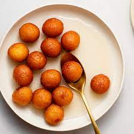

Indian Desserts
The sweet foods that Indians eat are referred to as mithai, and each one has
a distinctive flavour character.
Commonly used in Indian desserts are basic components like sugar, wheat, almonds, milk, and
lentils.
However, each one has a distinct flavour and is accentuated with traditional Indian spices.
These candies have more purposes than just satisfying a sweet tooth. Some of them are offered to
deities and are customary at festive times.
Indian desserts are typically prepared on the stovetop, making them a tasty alternative to baked
sweets.
Skill 1: Dried Fig Kheer
Skill 2: Besan Laddoo
